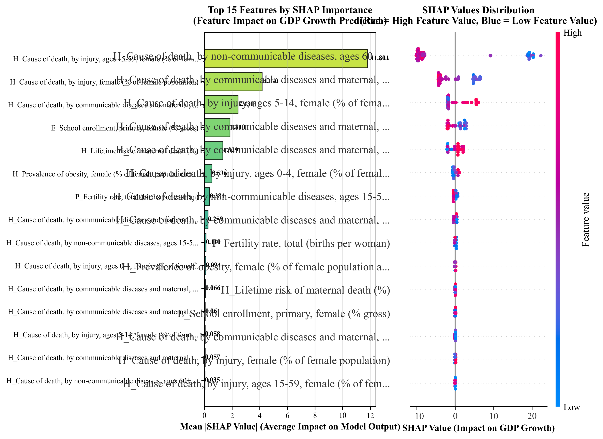
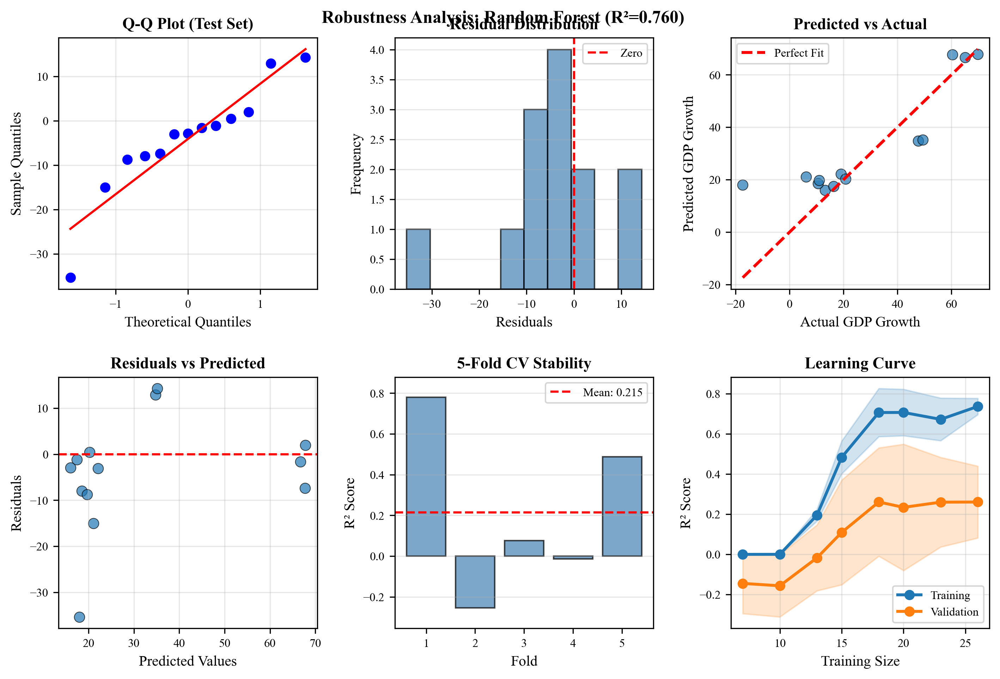
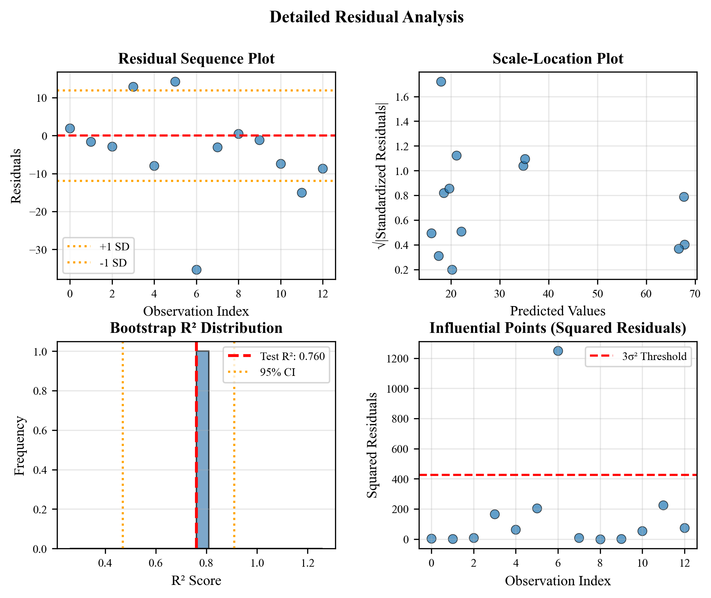

| Rank | Model | R² | RMSE | MAE | CV R² |
|---|---|---|---|---|---|
| 1 | Random Forest | 0.7605 | 12.60 | 8.68 | 0.2148 |
| 2 | Gradient Boosting | 0.7040 | 14.01 | 10.54 | -0.0340 |
| 3 | XGBoost | 0.6461 | 15.32 | 11.14 | 0.0357 |
Models ranked by test R². Best model highlighted.
Click image to enlarge.
SHAP values show feature contributions. Higher absolute values = greater importance.
Comprehensive validation diagnostics for model reliability. Click to enlarge.
Six diagnostic plots: Q-Q plot (normality), residual distribution, predicted vs actual, residuals vs predicted, cross-validation stability, and learning curve.
Detailed residual diagnostics: sequence plot, scale-location, bootstrap R² distribution, and influential points.
| Test | Value | Interpretation |
|---|---|---|
| Shapiro-Wilk | p = {res['validation']['shapiro_p']:.4f} | {"Residuals normal (p > 0.05)" if res['validation']['shapiro_p'] > 0.05 else "Non-normal residuals"} |
| Bootstrap Mean | R² = {res['validation']['bootstrap_r2_mean']:.4f} | Average across 100 resamples |
| Bootstrap 95% CI | [{res['validation']['bootstrap_ci'][0]:.4f}, {res['validation']['bootstrap_ci'][1]:.4f}] | Confidence interval for R² |
Summary statistics for target and top 15 predictive variables.
| Variable | Mean | Std | Min | 25% | 50% | 75% | Max |
|---|---|---|---|---|---|---|---|
| H_Cause of death, by injury, ages 15-59, female (%... | 0.05 | 0.16 | -0.31 | -0.01 | 0.06 | 0.16 | 0.48 |
| H_Cause of death, by injury, female (% of female p... | 0.06 | 0.11 | -0.18 | -0.02 | 0.07 | 0.11 | 0.42 |
| H_Cause of death, by communicable diseases and mat... | -0.75 | 0.44 | -1.75 | -1.10 | -0.70 | -0.42 | -0.01 |
| H_Cause of death, by communicable diseases and mat... | -0.34 | 0.22 | -0.84 | -0.50 | -0.33 | -0.19 | 0.07 |
| E_School enrollment, primary, female (% gross) | 1.03 | 0.85 | -0.37 | 0.41 | 0.99 | 1.62 | 2.70 |
| H_Cause of death, by non-communicable diseases, ag... | 0.31 | 0.20 | -0.10 | 0.14 | 0.30 | 0.46 | 0.78 |
| H_Prevalence of obesity, female (% of female popul... | 0.29 | 0.15 | 0.10 | 0.18 | 0.25 | 0.36 | 0.69 |
| P_Fertility rate, total (births per woman) | -0.05 | 0.03 | -0.10 | -0.08 | -0.05 | -0.03 | 0.00 |
| H_Cause of death, by non-communicable diseases, ag... | 0.70 | 0.35 | 0.03 | 0.43 | 0.67 | 0.90 | 1.43 |
| H_Cause of death, by injury, ages 5-14, female (% ... | 0.22 | 0.32 | -0.46 | 0.05 | 0.22 | 0.38 | 1.52 |
Statistics computed from available data (n=52 countries).
Pearson correlation coefficients between predictors and GDP growth.
| Rank | Variable | Correlation | P-value | Significance |
|---|---|---|---|---|
| 1 | H_Cause of death, by injury, ages 15-59, female (%... | -0.6029 | 0.0000 | *** |
| 2 | H_Cause of death, by injury, female (% of female p... | -0.5965 | 0.0000 | *** |
| 3 | H_Cause of death, by communicable diseases and mat... | 0.5397 | 0.0000 | *** |
| 4 | H_Cause of death, by communicable diseases and mat... | 0.5136 | 0.0001 | *** |
| 5 | E_School enrollment, primary, female (% gross) | -0.4796 | 0.0003 | *** |
| 6 | H_Cause of death, by non-communicable diseases, ag... | -0.4766 | 0.0004 | *** |
| 7 | H_Prevalence of obesity, female (% of female popul... | 0.4512 | 0.0008 | *** |
| 8 | P_Fertility rate, total (births per woman) | -0.4279 | 0.0016 | ** |
| 9 | H_Cause of death, by non-communicable diseases, ag... | -0.4066 | 0.0028 | ** |
| 10 | H_Cause of death, by injury, ages 5-14, female (% ... | -0.3828 | 0.0051 | ** |
| 11 | H_Cause of death, by communicable diseases and mat... | 0.3522 | 0.0104 | * |
| 12 | H_Cause of death, by injury, ages 0-4, female (% o... | -0.3133 | 0.0237 | * |
| 13 | H_Lifetime risk of maternal death (%) | 0.3121 | 0.0243 | * |
| 14 | H_Cause of death, by communicable diseases and mat... | 0.3082 | 0.0262 | * |
| 15 | H_Cause of death, by communicable diseases and mat... | 0.3075 | 0.0266 | * |
Significance: *** p<0.001, ** p<0.01, * p<0.05, ns = not significant.
Adjust key variables to project GDP growth impact. Based on {best_name} model (R²={best_res['r2']:.3f}).
Key Insights: